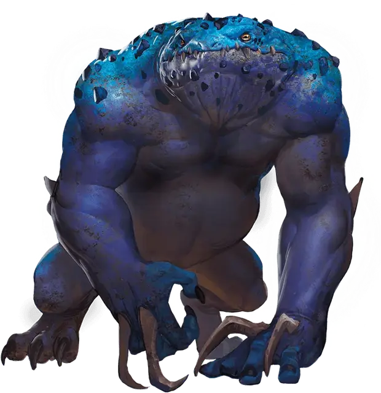

Синий слаад
Blue Slaad
Большая Аберрация, хаотично-нейтральная

Класс Доспеха 15 (природный доспех)
Хиты 123 (13к10 + 52)
Скорость 30 футов
| мод | спас | ||
|---|---|---|---|
| СИЛ | 20 | +5 | +5 |
| ЛОВ | 15 | +2 | +2 |
| ТЕЛ | 18 | +4 | +4 |
| мод | спас | ||
|---|---|---|---|
| ИНТ | 7 | −2 | −2 |
| МДР | 7 | −2 | −2 |
| ХАР | 9 | −1 | −1 |
Навыки Восприятие +1
Сопротивление урону звук, кислота, огонь, холод, электричество
Чувства тёмное зрение 60 футов, пассивное Восприятие 11
Языки Слаадский, Телепатия 60 фт.
Опасность 7 (2900 опыта)
Бонус мастерства +3
Особенности
Сопротивление магии. Слаад совершает с преимуществом спасброски от заклинаний и прочих магических эффектов.
Регенерация. Слаад восстанавливает 10 хитов в начале своего хода, если у него есть хотя бы 1 хит.
Действия
Мультиатака. Слаад совершает три атаки: одну укусом, и две когтями.
Укус. Рукопашная атака оружием: +8 к попаданию, досягаемость 5 футов, одна цель. Попадание: Колющий урон 12 (2к6 + 5).
Коготь. Рукопашная атака оружием: +8 к попаданию, досягаемость 5 футов, одна цель. Попадание: Рубящий урон 12 (2к6 + 5). Если цель — гуманоид, она должна преуспеть в спасброске Телосложения Сл 15, иначе заразится вирусом хаоса. Будучи больной, цель не может восстанавливать хиты, и максимум её хитов уменьшается на 10 (3к6) каждые 24 часа. Если болезнь уменьшает максимум хитов до 0, цель мгновенно превращается в красного слаада или, если могла накладывать заклинания как минимум 3 уровня, в зеленого слаада. Только заклинание исполнение желаний может обратить это превращение.
Описание
Синие костяные наросты, выступающие из локтей синих слаадов, наносят гуманоидам страшные зараженные раны, от которых те превращаются в слаадов. Эта инфекция, называемая «вирусом хаоса», превращает цель во взрослого красного слаада (или в зеленого слаада, если цель была заклинателем, способным накладывать заклинания 3 уровня и выше).
См. дополнительно статью: "Бестиарий: Слаады"